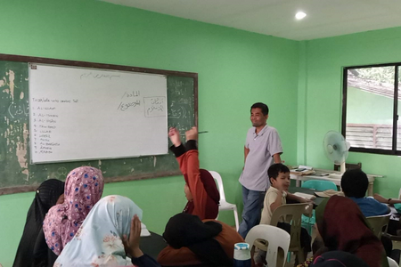
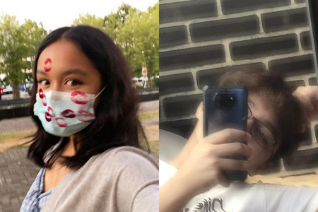

Background, Significance, Problem Identification Proposed Intervention of the Project Proposal

The important data we gathered about the institution are the important needs and issues the institution is currently dealing with. According to Sir Montazer Lupon, the partner institution has been dealing with funding needed to answer a line for water supply, a lack of functioning toilets due to flooding, and whiteboards for teaching.
The objectives of the project are to identify, evaluate and assist the situation and needs of the institution while the goals are to facilitate and extend aid from different stakeholders to alleviate the present situation of the institution.
Problem: Regarding their water supply and the lack of teaching materials.
Action: We will be contacting said organizations and private entities and asking them for aid on how they can respond to these specific issues. With our personal resources, we will be donating some of the resources we have for their missing supplies and such.
Reason: We chose these issues specifically as it is appropriate to our group. This is because it is within the resources our members have discussed.
Composting for the community and environment could help the plants like vegetables grow faster through using leftover wastes/biodegradables which could help the community have their own source of food. It benefits the environment through producing more plants which could help lessen the effects of global calamities like flooding. By composting, our partner institution could grow and produce without wasting much money or materials. In addition, with the kale we are using to grow, they could benefit from its nutrients and it is much healthier than store bought products.
Status ng Komunidad:
Ang napapanahong isyu sa komunidad na nangangailangan ng agarang tugon ay una ang kawalan ng palikuran, pangalawa ang kawalan ng koneksyon ng tubig mula sa Davao City Water District at ang pangatlo ang kakulangan ng white board at mga materyales sa pagtuturo. Ito ay nasabi namin sa pamamagitan ng pagtanong o interbyu namin sa kay Ustadz Montazer Lupon, ang namumuno sa paaralan, sa pamamagitan ng tawag sa telepono at social applications. Sa aming pananaw, nangyayari ang mga isyu at problemang ito dahil sa natural na kalamidad lalo na ang pagbaha at kakulangan ng badyet o pondo upang matustusan ang pangangailangan ng materyales sa pagtuturo. Ayon kay Ustadz Montazer Lupon, nasira ng pagbaha ang kanilang pasilidad sa palikuran at dahil sa kakulangang pinansyal ito ay hindi naipatayo muli at pati ang koneksyon ng tubig ay apektado na rin.
Ang aming karanasan sa problema o isyung binanggit namin ay kahalintulad lamang sa sitwasyon ng institusyon. Nagkaroon din kami ng mga karanasan kung saan hindi namin nakamit ang mga kinakailangang kagamitan o pasilidad.
Napagwari rin namin na hindi sa lahat ng oras ay mayroong mga kagamitan na kaagaran naming magamit ngunit nagawan naming pagtiyagaan ang kung ano ang mayroon kami at katulad ng aming naranasan noong nagkaroon ng pandemya na nahirapan kami maghanap ng mga materyales na kailangan namin para sa aming eskwela. Kaya masasabi ko na kahit makaranas tayo ng katulad na mga problema kagaya nalang ng naranasan ng Madrasah, dapat nating bigyan pansin at maghanap ng pamaraan para masolusyon ito. Ang mga mungkahi o tugon na aming naibigay upang mabigyan ng agarang solusyon ang problema o isyung nabanggit ay ang suriin at hanapan namin mga potensyal na paraan upang makatulong sa paglutas ng nasabing problema, sa salitang banyaga nagkaroon kami ng brainstorming. Kinausap namin ang namumuno sa nasabing institusyon na si Ustadz Montazer Lupon upang magkaroon ng pangunahing mapagkukunan ng impormasyon tungkol sa isyu at dahil dito nakabuo kami ng iba’t ibang mungkahi tulad ng pagbigay ng mga gamit sa paaralan, pagbabahagi ng impormasyon tungkol sa problema ng institusyon sa pamamagitan ng paggawa ng poster, at paghahanap ng donor o sponsor para muling itayo ang nasirang pasilidad at ibigay ang mga kagamitan sa paaralan na kailangan nila.
Napanindigan namin ang aming gagawing tugon sa problema o isyung nabanggit sa pamamagitan ng pagkaroon ng mga mababait at mapangkawaggawa na donor na handang tugonan ang pinansyal na kailangan para mapatayo muli ang nasirang pasilidad at magkaroon ng koneksyon ng tubig buhat sa Davao Water District at kaming miyembro ng grupo ay nagbigay rin ng mga materyales na pwede nilang magamit sa paaralan. Sinimulan na ng mga nasabing donor ang pagpopondo para sa mga koneksyon ng tubig, palikuran, at whiteboard at sa kasalukuyan ay nakapondohan na ng sampung libong piso, at isa sa mga miyembro ay bumisita sa institusyon upang hindi lamang makapanayam ang pinuno, kundi suriin din ang lugar para sa pagtatayo at nag-donate ng ekstra mga gamit sa paaralan ay walang gamit o hindi na kailangan ng aming grupo, na tinanggap. Sa pamamagitan ng mga ito, ang mga nasa institusyon ay maaaring gumamit ng maayos at komportableng banyo, at mga silid-aralan na may mga kinakailangang materyales para sa pagtuturo.

Meet the webpage designers: Krishiavyn Therese Dane Ralota Bagaloyos and Krysler Raven Khatri Bersamin.
They are the webpage designers for Webpage 3 Background and works together along with Group 2A. They both study at Ateneo de Davao University Junior High school and they are from Grade 9 Borgia. Find them
ktdrbagaloyos@aduu.edu.ph
krykbersamin@addu.edu.ph
Back to Top